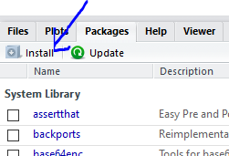

3 + 3[1] 6The console is an interactive environment for RStudio, click on the “Console” pane, type 3 + 3 and press enter. R displays the result of the calculation.
3 + 3[1] 6+ is called an operator. R has the operators you would expect for for basic mathematics:
Arithmetic operators
| operator | meaning |
|---|---|
| + | plus |
| - | minus |
| * | times |
| / | divided by |
| ^ | exponent |
Logical Operators
| operator | meaning |
|---|---|
| == | exactly equal |
| != | not equal to |
| < | less than |
| <= | less than or equal to |
| > | greater than |
| >= | greater than or equal to |
| x|y | x or y |
| x&y | x and y |
| !x | not x |
Spaces can be used to make code easier to read, but are not required.
2 * 2 == 4[1] TRUEWhen you have certain values, data, plots, etc that you want to work with You can create objects (make assignments) in R with the assignment operator <-:
All R statements where you create objects, assignment statements, have the same form:
object_name <- valueWhen reading that code say “object name gets value” in your head.
x <- 3 * 4
x[1] 12Once you have an object you can do other calculations with it.
x * x[1] 144Objects vs. Variables
What are known as objects in R are known as variables in many other programming languages. Depending on the context, object and variable can have drastically different meanings. However, in this lesson, the two words are used synonymously. For more information see: https://cran.r-project.org/doc/manuals/r-release/R-lang.html#Objects
We can store all kinds of information as objects. For example:
human_chr_number <- 23
gene_name <- 'pten'
human_diploid_chr_num <- 2 * human_chr_numberOnce an object has a value, you can change that value by overwriting it. R will not give you a warning or error if you overwrite an object, which may or may not be a good thing depending on how you look at it.
# gene_name has the value 'pten'
# We will now assign the new value 'tp53'
gene_name <- 'tp53'You can see the value assigned to an object in the RStudio environment pane, or you can run a line of code that has only an object name, and R will normally display the contents of that object in the console
You can also remove an object from R’s memory entirely with the rm() function.
# delete the object 'gene_name'
rm(gene_name)Now, if we try to print that object we are told the object no longer exists.
You will make lots of assignments and <- is a pain to type. Avoid the temptation to use =: it will work, but it will cause confusion later. Instead, use RStudio’s keyboard shortcut: Alt + - (the minus sign).
Notice that RStudio automagically surrounds <- with spaces, which is a good code formatting practice. Code is miserable to read on a good day, so giveyoureyesabreak and use spaces.
The name for objects must start with a letter, and can only contain letters, numbers, underscores (_)and periods (.). The name of the object should describe what is being assigned so they typically will be multiple words. One convention used is snake_case where lowercase words are separated with _. Another popular style is camelCase where compound words or phrases are written so that each word or abbreviation in the middle of the phrase begins with a capital letter, with no intervening spaces or punctuation and the first letter is lowercase.
thisIsCamelCase
some_use_snake_case
others.use.periods #avoid
Others_pRefer.to_RENOUNCEconvention #avoidFunctions are “canned scripts” that automate more complicated sets of commands. Many functions are predefined, or can be made available by importing R packages (more on that later). A function usually gets one or more inputs called arguments. Functions often (but not always) return a value.
A typical example would be the function round(). The input (the argument) must be a number, and the return value (in fact, the output) is that number rounded to the nearest whole number. Executing a function (‘running it’) is called calling the function. You can save the output of a function to an object. The format would look like:
b <- round(a)Here, the value of a is given to the round() function, the round() function rounds the number, and returns the value which is then assigned to the object b.
The return ‘value’ of a function need not be numerical (like that of sqrt()), and it also does not need to be a single item: it can be a set of things, or even a dataset. We’ll see that when we read data files into R.
Arguments can be anything, not only numbers or filenames, but also other objects. Exactly what each argument means differs per function, and must be looked up in the documentation (see below). Some functions take arguments which may either be specified by the user, or, if left out, take on a default value: these are called options. Options are typically used to alter the way the function operates, such as whether it ignores ‘bad values’, or what symbol to use in a plot. However, if you want something specific, you can specify a value of your choice which will be used instead of the default.
round() only needs one argument, a number, or object that is storing a numerical value.
round(3.14159)[1] 3or
pi <- 3.14159
round(pi)[1] 3The default action of the function is to round to the nearest whole number. If we want more digits we can see how to do that by getting information about the round function. We can use args(round) or look at the help for this function using ?round.
args(round)function (x, digits = 0)
NULLWe see that if we want a different number of digits, we can type digits=2 or however many we want.
round(pi, digits = 2)[1] 3.14If you provide the arguments in the exact same order as they are defined you don’t have to name them:
round(pi, 2)[1] 3.14And if you do name the arguments, you can switch their order:
round(digits = 2, x = pi)[1] 3.14It’s good practice to put the non-optional arguments (like the number you’re rounding) first in your function call, and to specify the names of all optional arguments. If you don’t, someone reading your code might have to look up the definition of a function with unfamiliar arguments to understand what you’re doing.
In the previous example we looked up the arguments to round() using args(round) alternatively we could’ve looked at the help page for round() to find this out with ?round. To get help about a particular package or function you can access the help pane in RStudio and type its name in the search box.

The help() function and ? help operator in R provide access to the documentation pages for R functions, data sets, and other objects, both for packages in the standard R distribution and for contributed packages. To do so type as follows
help({function})
help(package = {package name})
?{function}
?"{package name}"Look at the documentation for the seq function. What does seq do? Give an example of using seq with either the by or length.out argument.
While you can write your own functions, most functions you use will be part of a package. In R, the fundamental unit of shareable code is the package. A package bundles together code, data, documentation, and tests, and is easy to share with others. As of July 2018, there were over 14,000 packages available on the Comprehensive R Archive Network, or CRAN, the public clearing house for R packages. This huge variety of packages is one of the reasons that R is so successful.
Installing a package using RStudio requires selecting the Install Packages Button in the Files, Plots, Packages Pane

In the pop up box that results simply type the name of the package and check “install dependencies” and click Install

Its also possible for you to install and load packages from the console. Always make sure to put the package name in quotes when installing and setting dependencies = True
install.packages("tidyverse", dependencies = TRUE)
library(tidyverse)You only need to install a package once, but you need to reload it every time you start a new session.
Vectors are probably the most used commonly used object type in R. “Vector” means different things in different fields (mathematics, geometry, biology), but in R a vector is a collection of values that are all of the same type (numbers, characters, etc.).
There are numerous data types. Some of the other most common data types you will encounter are numeric data, character data and logical data. Vectors of one data type only are called atomic vectors. Read more about vectors and data types in the book R for Data Science
One of the most common ways to create a vector is to use the c() function - the “concatenate” or “combine” function. Inside the function you may enter one or more values; for multiple values, separate each value with a comma:
# Create the SNP gene name vector
snp_genes <- c("OXTR", "ACTN3", "AR", "OPRM1")Vectors always have a mode and a length. You can check these with the mode() and length() functions respectively. Another useful function that gives both of these pieces of information is the str() (structure) function.
# Check the mode, length, and structure of 'snp_genes'
mode(snp_genes)[1] "character"length(snp_genes)[1] 4str(snp_genes) chr [1:4] "OXTR" "ACTN3" "AR" "OPRM1"Vectors are quite important in R. Another data type that we will work with later in this lesson, data frames, are collections of vectors. What we learn here about vectors will pay off even more when we start working with data frames.
Let’s create a few more vectors to play around with:
# Some interesting human SNPs
# while accuracy is important, typos in the data won't hurt you here
snps <- c("rs53576", "rs1815739", "rs6152", "rs1799971")
snp_chromosomes <- c("3", "11", "X", "6")
snp_positions <- c(8762685, 66560624, 67545785, 154039662)Once we have vectors, one thing we may want to do is specifically retrieve one or more values from our vector. To do so, we use bracket notation. We type the name of the vector followed by square brackets. In those square brackets we place the index (e.g. a number) in that bracket as follows:
# get the 3rd value in the snp vector
snps[3][1] "rs6152"In R, every item your vector is indexed, starting from the first item (1) through to the final number of items in your vector. You can also retrieve a range of numbers:
# get the 1st through 3rd value in the snp vector
snps[1:3][1] "rs53576" "rs1815739" "rs6152" If you want to retrieve several (but not necessarily sequential) items from a vector, you pass a vector of indices; a vector that has the numbered positions you wish to retrieve.
# get the 1st, 3rd, and 4th value in the snp vector
snps[c(1, 3, 4)][1] "rs53576" "rs6152" "rs1799971"There are additional (and perhaps less commonly used) ways of subsetting a vector (see these examples.
Also, several of these subsetting expressions can be combined:
# get the 1st through the 3rd value, and 4th value in the snp vector
# yes, this is a little silly in a vector of only 4 values.
snps[c(1:3,4)][1] "rs53576" "rs1815739" "rs6152" "rs1799971"Once you have an existing vector, you may want to add a new item to it. To do so, you can use the c() function again to add your new value:
# add the gene "CYP1A1" and "APOA5" to our list of snp genes
# this overwrites our existing vector
snp_genes <- c(snp_genes, "CYP1A1", "APOA5")We can verify that “snp_genes” contains the new gene entry
snp_genes[1] "OXTR" "ACTN3" "AR" "OPRM1" "CYP1A1" "APOA5" Using a negative index will return a version of a vector with that index’s value removed:
snp_genes[-6][1] "OXTR" "ACTN3" "AR" "OPRM1" "CYP1A1"We can remove that value from our vector by overwriting it with this expression:
snp_genes <- snp_genes[-6]
snp_genes[1] "OXTR" "ACTN3" "AR" "OPRM1" "CYP1A1"We can also explicitly rename or add a value to our index using double bracket notation:
snp_genes[6]<- "APOA5"
snp_genes[1] "OXTR" "ACTN3" "AR" "OPRM1" "CYP1A1" "APOA5" Answer the following questions to test your knowledge of vectors
Which of the following are true of vectors in R? A) All vectors have a mode or a length
B) All vectors have a mode and a length
C) Vectors may have different lengths
D) Items within a vector may be of different modes
E) You can use the c() to add one or more items to an existing vector
F) You can use the c() to add a vector to an existing vector
There is one last set of cool subsetting capabilities we want to introduce. It is possible within R to retrieve items in a vector based on a logical evaluation or numerical comparison. For example, let’s say we wanted get all of the SNPs in our vector of SNP positions that were greater than 100,000,000. We could index using the ‘>’ (greater than) logical operator:
snp_positions[snp_positions > 100000000][1] 154039662In the square brackets you place the name of the vector followed by the comparison operator and (in this case) a numeric value. Some of the most common logical operators you will use in R are:
| Operator | Description |
|---|---|
| < | less than |
| <= | less than or equal to |
| > | greater than |
| >= | greater than or equal to |
| == | exactly equal to |
| != | not equal to |
| !x | not x |
| a | b |
| a & b | a and b |
Finally, there are a few other common retrieve or replace operations you may want to know about. First, you can check to see if any of the values of your vector are missing (i.e. are NA, that stands for not avaliable). Missing data will get a more detailed treatment later, but the is.NA() function will return a logical vector, with TRUE for any NA value:
snp_genes <- c("OXTR", "ACTN3", "AR", "OPRM1", "CYP1A1", NA, "APOA5")
is.na(snp_genes)[1] FALSE FALSE FALSE FALSE FALSE TRUE FALSEsum(is.na(snp_genes))[1] 1Sometimes, you may wish to find out if a specific value (or several values) is present a vector. You can do this using the comparison operator %in%, which will return TRUE for any value in your collection that is in the vector you are searching:
# current value of 'snp_genes':
# chr [1:7] "OXTR" "ACTN3" "AR" "OPRM1" "CYP1A1" NA "APOA5"
# test to see if "ACTN3" or "APO5A" is in the snp_genes vector
# if you are looking for more than one value, you must pass this as a vector
snp_genes %in% c("ACTN3","APOA5")[1] FALSE TRUE FALSE FALSE FALSE FALSE TRUEWhat data modes are the following vectors? a. snps
b. snp_chromosomes
c. snp_positions
Add the following values to the specified vectors: a. To the snps vector add: “rs662799”
b. To the snp_chromosomes vector add: 11
c. To the snp_positions vector add: 116792991
Make the following change to the snp_genes vector:
Hint: Your vector should look like this in ‘Environment’: chr [1:7] "OXTR" "ACTN3" "AR" "OPRM1" "CYP1A1" NA "APOA5". If not recreate the vector by running this expression: snp_genes <- c("OXTR", "ACTN3", "AR", "OPRM1", "CYP1A1", NA, "APOA5")
snp_genes that does not contain CYP1A1 and thensnp_genesUsing indexing, create a new vector named combined that contains:
snp_genessnpssnp_chromosomessnp_positionsWhat type of data is combined?